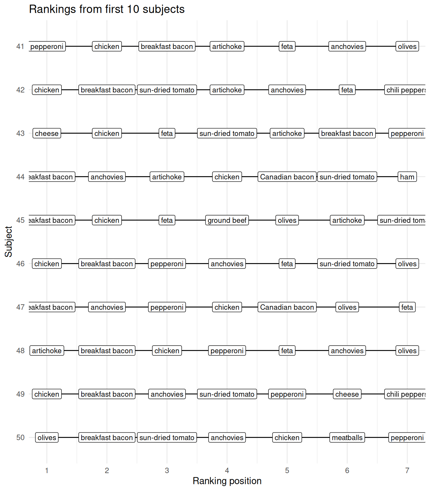
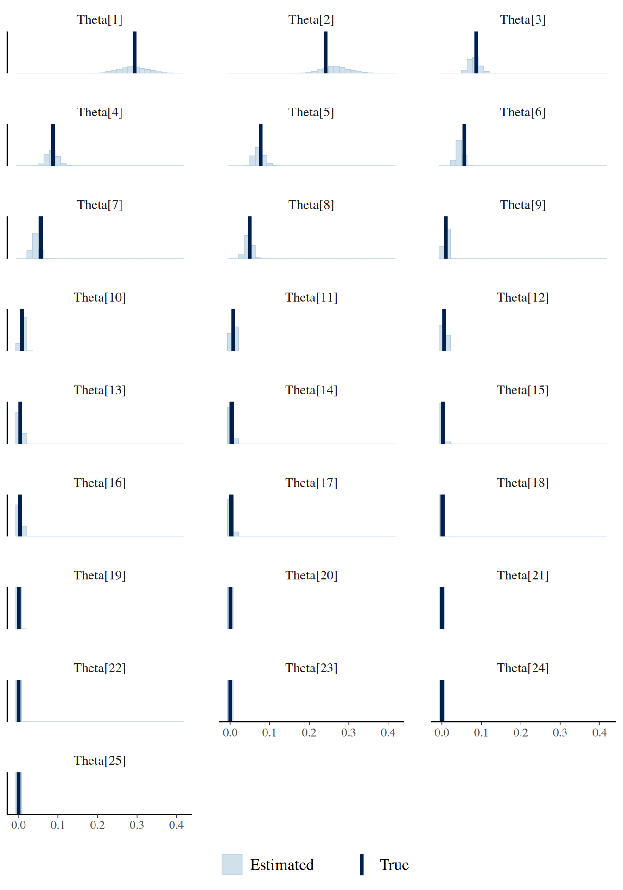

library(tidytable) # Nicer alternative to dplyr and purrr
library(ggplot2) # Nice plots
library(extraDistr) # More distributions
library(rcorpora) # Get random words
library(cmdstanr) # Lightweight Stan interface
library(bayesplot) # Nice Bayesian plots
set.seed(42) # Keep everything R the same (not for Stan though)A simple way to model rankings with Stan
Stan
Bayesian
R
Citable
How to fit the exploded logit distribution in Stan to model ranking data
Update Notice
This is an updated version of a post originally published on March 21, 2021.
I’ve updated this post in January 2026 to work with current versions of Stan and R packages. The main changes include:
Updated Stan syntax to current standards
Using cmdstanr instead of rstan and some other R packages.
The core content and ideas remain the same.
The initial problem
I wrote what I thought was the generative process for some modeling work, and it looked too common to not have a name, so I started asking around on what it was a very popular website back in 2021, Twitter.
One useful clue was about the exploded logit distribution.1

In this post, I’ll show how this model can be fit in the probabilistic programming language Stan, and how it can be used to describe the underlying order of ranking data.
I’m going to load some R packages that will be useful throughout this post.
Ranking data
Ranking data appear when we care about the underlying order that certain elements have. We might want to know which are the best horses after looking at several races (Gakis et al. 2018), which is the best candidate for a job after a series of interviewers talked to several candidates. More in line with cognitive science, we might want to know which are the best possible completions for a sentence or the best exemplars of a category.
One way to get a ranking of exemplars of a category, for example, is to present them to participants and ask them to order all (or a subset) of them (see Barsalou 1985).
A ranking simulation using pizza toppings

toppings <- corpora("foods/pizzaToppings")$pizzaToppings
N_toppings <- length(toppings)
toppings [1] "anchovies" "artichoke"
[3] "bacon" "breakfast bacon"
[5] "Canadian bacon" "cheese"
[7] "chicken" "chili peppers"
[9] "feta" "garlic"
[11] "green peppers" "grilled onions"
[13] "ground beef" "ham"
[15] "hot sauce" "meatballs"
[17] "mushrooms" "olives"
[19] "onions" "pepperoni"
[21] "pineapple" "sausage"
[23] "spinach" "sun-dried tomato"
[25] "tomatoes" Let’s say that we want to know the underlying order of pizza toppings. For the modeling, I’m going to assume that the toppings are ordered according to an underlying value, which also represents how likely it is for each topping to be the exemplar of their category.
To get a known ground truth for the ranking, I’m going to simulate an order of pizza toppings. I assign probabilities that sum up to one to the toppings by drawing a random sample from a Dirichlet distribution. The Dirichlet distribution is the generalization of the Beta distribution. It has a concentration parameter, usually \(\boldsymbol{\alpha}\), which is a vector as long as the probabilities we are sampling (25 here). When the vector is full of ones, the distribution is uniform: All probabilities are equally likely, so on average each one is \(\frac{1}{\text{vector length}}\) (\(\frac{1}{25}\) here). By setting all the concentration parameters below one (namely \(0.2\)), I’m enforcing sparsity in the random values that I’m generating, that is, many probability values close to zero.
These is the true order that I’m assuming here:
# all elements of the vector are 0.2
alpha <- rep(.2, N_toppings)
# Generate one draw from a Dirichlet distribution
P_toppings <- c(rdirichlet(1, alpha)) %>%
# Add names
setNames(toppings) %>%
# Sort from the best exemplar
sort(decreasing = TRUE)
P_toppings %>%
round(3) breakfast bacon chicken feta
0.294 0.241 0.087
anchovies sun-dried tomato olives
0.087 0.077 0.057
pepperoni artichoke cheese
0.056 0.049 0.010
Canadian bacon bacon ham
0.008 0.008 0.006
meatballs chili peppers garlic
0.004 0.004 0.004
ground beef tomatoes hot sauce
0.003 0.003 0.002
onions sausage pineapple
0.000 0.000 0.000
spinach mushrooms grilled onions
0.000 0.000 0.000
green peppers
0.000 - Given these values, if I were to ask a participant “What’s the most appropriate topping for a pizza?” I would assume that 29.37 percent of the time, I would get breakfast bacon.
Essentially, we expect something like this to be happening:
\[ \text{response} \sim \text{Categorical}(\Theta_{\text{toppings}}) \]
With \(\Theta_{\text{toppings}}\) representing the different probabilities for each topping. The probability mass function of the categorical distribution is absurdly simple: It’s just the probability of the outcome.
\[ p(x = i) = \Theta_i \]
where \(i = \{\)breakfast bacon, chicken, feta, anchovies, sun-dried tomato, olives, pepperoni, artichoke, cheese, Canadian bacon, bacon, ham, meatballs, chili peppers, garlic, ground beef, tomatoes, hot sauce, onions, sausage, pineapple, spinach, mushrooms, grilled onions, green peppers\(\}\).
We can simulate this with 100 participants as follows:
response <- rcat(100, P_toppings, names(P_toppings))And this should match approximately P_toppings.
table(response)/100response
breakfast bacon chicken feta
0.26 0.19 0.16
anchovies sun-dried tomato olives
0.07 0.15 0.06
pepperoni artichoke cheese
0.01 0.08 0.00
Canadian bacon bacon ham
0.02 0.00 0.00
meatballs chili peppers garlic
0.00 0.00 0.00
ground beef tomatoes hot sauce
0.00 0.00 0.00
onions sausage pineapple
0.00 0.00 0.00
spinach mushrooms grilled onions
0.00 0.00 0.00
green peppers
0.00 It seems that by only asking participants to give the best topping we could already deduce the underlying order…
True, but one motivation for considering ranking data is the amount of information that we gather with a list due to their combinatorial nature. If we ask participants to rank \(n\) items, an answer consists in making a single selection out of \(n!\) possibilities. Ordering 7 pizza toppings, for example, constitutes making a single selection out of 5040 possibilities!
If we don’t relay on lists and there is sparcity, it requires a large number of participants until we get answers of low probability. (For example, we’ll need a very large number of participants until we hear something else but hammer as an exemplar of tools).
- Now, what happens if we ask about the second most appropriate topping for a pizza?
Now we need to exclude the first topping that was given, and draw another sample from a categorical distribution. (We don’t allow the participant to repeat toppings, that is, to say that the best topping is pineapple and the second best is also pineapple). This means that now the probability of the topping already given is zero, and that we need to normalize our original probability values by dividing them by the new total probability (which will be lower than 1).
Here, the probability of getting the element \(j\) (where \(j \neq i\)) is
\[ p(x = j) = \frac{\Theta_j}{\sum \Theta_{[-i]}} \]
where \(\Theta_{[-i]}\) represents the probabilities of all the outcomes except of \(i\), which was the first one.
- We can go on with the third best topping, where we need to normalize the remaining probabilities by dividing by the new sum of probabilities (e.g., we remove elements \(i\) and \(j\)).
\[ p(x = k) = \frac{\Theta_k}{\sum \Theta_{[-i,-j]}} \]
- We can do this until we get to the last element, which will be drawn with probability 1.
And this is the exploded logit distribution.
This process can be simulated in R as follows:
rexploded <- function(n, ranked = 3, prob, labels = NULL){
# run n times
lapply(1:n, function(nn){
res <- rep(NA, ranked)
if(!is.null(labels)){
res <- factor(res, labels)
} else {
# if there are no labels, just 1,2,3,...
labels <- seq_along(prob)
}
for(i in 1:ranked){
# normalize the probability so that it sums to 1
prob <- prob/sum(prob)
res[i] <- rcat(1, prob = prob, labels = labels)
# remove the choice from the set:
prob[res[i]] <- 0
}
res
})
}If we would like to simulate 50 subjects creating a ranking of the best 7 toppings, we would do the following:
res <- rexploded(n = 50,
ranked = 7,
prob = P_toppings,
labels = names(P_toppings))
# subject 1:
res[[1]][1] sun-dried tomato artichoke olives
[4] breakfast bacon chicken pepperoni
[7] anchovies
25 Levels: breakfast bacon chicken feta ... green peppers
We have simulated ranking data of pizza toppings, can we recover the original probability values and “discover” the underlying order?
Fitting the exploded logistic distribution in Stan
To fit the model in Stan, I’m going to create a custom probability mass function that takes an array of integers, x, which represents a set of rankings, and a vector of probability values, theta, that sums up to one.
The logic of this function is that the probability mass function of a ranking \(\{i,j,k, \ldots, N \}\) can be written as a product of normalized categorical distributions (where the first one is just divided by 1).
\[ p(x = \{i,j,k,\ldots\}) = \frac{\Theta_i}{\sum \Theta} \cdot \frac{\Theta_j}{\sum \Theta_{[-i]}} \cdot \frac{\Theta_k}{\sum \Theta_{[-i, -j]}} \ldots \]
For Stan, we need the log-PDF. In log-space, products become sums, and divisions differences, and the log of \(\sum \Theta\) will be zero:
\[ \begin{aligned} \log(p(x = \{i,j,k,\ldots\})) =& \log(\Theta_i) - \log(\sum \Theta) \\ & + \log(\Theta_j) - \log(\sum \Theta_{[-i]}) \\ &+ \log(\Theta_k) - \log(\sum \Theta_{[-i, -j]}) \\ & + \ldots \end{aligned} \]
The following Stan code has a custom function that follows this logic but iterating over the rankings. In each iteration, it aggregates in the variable out the addends of the log probability mass function, and turns the probability of selecting again the already ranked element to zero. I save this code as "exploded.stan".
functions {
real exploded_lpmf(array[] int x, vector Theta){
real out = 0;
vector[num_elements(Theta)] thetar = Theta;
for(pos in x){
out += log(thetar[pos]) - log(sum(thetar));
thetar[pos] = 0;
}
return(out);
}
}
data{
int N_ranking; // total times the choices were ranked
int N_ranked; // total choices ranked
int N_options; // total options
array[N_ranking, N_ranked] int res;
}
parameters {
simplex[N_options] Theta;
}
model {
target += dirichlet_lpdf(Theta | rep_vector(1, N_options));
for(r in 1:N_ranking){
target += exploded_lpmf(res[r] | Theta);
}
}The whole model includes the usual data declaration, the parameter Theta declared as a simplex (i.e., it sums to one), and a uniform Dirichlet prior for Theta. (I’m assuming that I don’t know how sparse the probabilities are).
Let’s see if I can recover the parameter values.
# Make the list of lists into a matrix
res_matrix <- t(sapply(res, as.numeric))
ldata <- list(
res = res_matrix,
N_ranked = length(res[[1]]),
N_options = length(P_toppings),
N_ranking = length(res)
)
m_expl <- cmdstan_model("exploded.stan")
f_exploded <- m_expl$sample(
data = ldata,
seed = 123,
parallel_chains = 4,
refresh = 0
)f_exploded variable mean median sd mad q5 q95 rhat
lp__ -724.97 -724.61 3.65 3.57 -731.42 -719.65 1.00
Theta[1] 0.29 0.29 0.04 0.04 0.23 0.35 1.00
Theta[2] 0.27 0.27 0.04 0.03 0.21 0.33 1.00
Theta[3] 0.08 0.08 0.01 0.01 0.06 0.10 1.00
Theta[4] 0.09 0.08 0.01 0.01 0.06 0.11 1.00
Theta[5] 0.07 0.07 0.01 0.01 0.05 0.09 1.00
Theta[6] 0.05 0.04 0.01 0.01 0.03 0.06 1.00
Theta[7] 0.04 0.04 0.01 0.01 0.03 0.06 1.00
Theta[8] 0.05 0.05 0.01 0.01 0.03 0.06 1.00
Theta[9] 0.01 0.01 0.00 0.00 0.00 0.02 1.00
ess_bulk ess_tail
1637 2191
5941 3310
4884 3247
5410 2878
5771 2956
5578 3435
5973 3091
6068 2815
5606 3141
6586 3244
# showing 10 of 26 rows (change via 'max_rows' argument or 'cmdstanr_max_rows' option)I plot the posterior distributions of the probability values and the true probability values below.
mcmc_recover_hist(f_exploded$draws("Theta"),
P_toppings,
facet_args =
list(scales = "fixed", ncol = 3)) +
theme(legend.position = "bottom")
It looks reasonable. However, if we really want to be sure that this is working, we should probably use simulation based calibration (Talts et al. 2018).
What is this good for?
This super simple example shows how to get an underlying ranking based on a set of responses from a number of subjects. It’s straightforward to adapt this model to data from participants ranking elements from different sets of the same size (e.g., 7 out of 25 toppings, 7 out of 25 tools). It’s a little less straightforward if the sets are of different sizes, e.g., rank 7 toppings out 25, but 7 tools out 50. This is just because Stan doesn’t allow ragged arrays. See this Stan Discourse thread for some tips on implementing the latter model.
Could this be used as a cognitive model of people’s rankings?

Maybe. And I enter here in the realm of half baked research, ideal for a blog post.
Lee, Steyvers, and Miller (2014) show the implementation of a cognitive model for rank order data from the latent knowledge of participants, which is based on Thurstonian models (Thurstone 1927, 1931) fitted with Bayesian methods in JAGS (Johnson and Kuhn 2013).
The exploded logit model seems to be closely related to the Thurstonian model. The Thurstonian model assumes that each participant assigns an underlying score to each item of a set, which is drawn from a true score with normally distributed error. The score determines the order that the participant gives. We can think about the exploded logit similarly. While I modeled the underlying ranking based on probability values, one could assume that each participant \(s\) had their own score \(\mu_{is}\) for each item (or pizza topping) \(i\), which is built as a common score \(\mu_i\) together with some individual deviation \(\epsilon_{is}\):
\[ \mu_{is} = \mu_i + \epsilon_{is} \]
If we assume that \(\epsilon_{is}\) has a Gumbel distribution, then the probability of \(\mu_{is}\) being ranked first out of N options is determined by a softmax function:
\[ P(i) = \frac{\exp(\mu_i)}{\sum \exp(\mu)} \]
where \(\mu\) is the vector of scores for all elements of the set.
And the probability of ordering \(j\) second is:
\[ P(i,j,\ldots) = \frac{\exp(\mu_j)}{\sum \exp(\mu_{[-i]})} \]
and so forth.
These last equations are essentially the same categorical distributions that I used before, but the softmax function converts the unbounded scores into probabilities first. However, with the exploded logit, the error term goes away leading to a more tractable model. This is not the case for the Thurstonian model. The Thurstonian model is more complex, but at the same time we gain more flexibility. With the error term, the Thurstonian model can incorporate the reliability of the participants’ judgments and even correlations, which, as far as I know, can’t be included in the exploded logit model.
How to cite this post
Citation
BibTeX:
@misc{nicenboim2026asimplewaytomodelrankingswithstan,
author = {Nicenboim, Bruno},
title = {A simple way to model rankings with Stan},
year = {2026},
month = {januari},
url = {https://bruno.nicenboim.me/posts/posts/2026-01-07-a-simple-way-to-model-rankings-with-stan/},
doi = {10.5281/zenodo.18171805}
}APA:
Nicenboim, B. (2026, januari 07). A simple way to model rankings with Stan. https://doi.org/10.5281/zenodo.18171805
Session info
sessionInfo()R version 4.5.0 (2025-04-11)
Platform: x86_64-pc-linux-gnu
Running under: Ubuntu 22.04.5 LTS
Matrix products: default
BLAS: /usr/lib/x86_64-linux-gnu/atlas/libblas.so.3.10.3
LAPACK: /usr/lib/x86_64-linux-gnu/atlas/liblapack.so.3.10.3; LAPACK version 3.10.0
locale:
[1] LC_CTYPE=en_US.UTF-8 LC_NUMERIC=C
[3] LC_TIME=nl_NL.UTF-8 LC_COLLATE=en_US.UTF-8
[5] LC_MONETARY=nl_NL.UTF-8 LC_MESSAGES=en_US.UTF-8
[7] LC_PAPER=nl_NL.UTF-8 LC_NAME=C
[9] LC_ADDRESS=C LC_TELEPHONE=C
[11] LC_MEASUREMENT=nl_NL.UTF-8 LC_IDENTIFICATION=C
time zone: Europe/Amsterdam
tzcode source: system (glibc)
attached base packages:
[1] stats graphics grDevices utils datasets
[6] methods base
other attached packages:
[1] bayesplot_1.12.0 cmdstanr_0.9.0 rcorpora_2.0.1
[4] extraDistr_1.10.0 ggplot2_3.5.2 tidytable_0.11.2
loaded via a namespace (and not attached):
[1] gtable_0.3.6 jsonlite_2.0.0
[3] dplyr_1.1.4 compiler_4.5.0
[5] tidyselect_1.2.1 Rcpp_1.1.0
[7] stringr_1.5.1 scales_1.4.0
[9] yaml_2.3.10 fastmap_1.2.0
[11] plyr_1.8.9 R6_2.6.1
[13] labeling_0.4.3 generics_0.1.4
[15] distributional_0.5.0 knitr_1.50
[17] htmlwidgets_1.6.4 backports_1.5.0
[19] checkmate_2.3.2 tibble_3.3.0
[21] pillar_1.11.1 RColorBrewer_1.1-3
[23] posterior_1.6.1 rlang_1.1.6
[25] stringi_1.8.7 xfun_0.52
[27] cli_3.6.5 withr_3.0.2
[29] magrittr_2.0.4 ps_1.9.1
[31] processx_3.8.6 digest_0.6.37
[33] grid_4.5.0 lifecycle_1.0.4
[35] vctrs_0.6.5 tensorA_0.36.2.1
[37] evaluate_1.0.3 glue_1.8.0
[39] data.table_1.18.0 farver_2.1.2
[41] abind_1.4-8 reshape2_1.4.4
[43] rmarkdown_2.29 matrixStats_1.5.0
[45] tools_4.5.0 pkgconfig_2.0.3
[47] htmltools_0.5.8.1 References
Barsalou, Lawrence W. 1985. “Ideals, Central Tendency, and Frequency of Instantiation as Determinants of Graded Structure in Categories.” Journal of Experimental Psychology: Learning, Memory, and Cognition 11 (4): 629.
Beggs, S, S Cardell, and J Hausman. 1981. “Assessing the Potential Demand for Electric Cars.” Journal of Econometrics 17 (1): 1–19. https://doi.org/https://doi.org/10.1016/0304-4076(81)90056-7.
Gakis, Konstantinos, Panos Pardalos, Chang-Hwan Choi, Jae-Hyeon Park, and Jiwun Yoon. 2018. “Simulation of a Probabilistic Model for Multi-Contestant Races.” Athens Journal of Sports 5 (2): 95–114.
Johnson, Timothy R., and Kristine M. Kuhn. 2013. “Bayesian Thurstonian Models for Ranking Data Using JAGS.” Behavior Research Methods 45 (3): 857–72. https://doi.org/10.3758/s13428-012-0300-3.
Lee, Michael D., Mark Steyvers, and Brent Miller. 2014. “A Cognitive Model for Aggregating People’s Rankings.” PLOS ONE 9 (5): e96431. https://doi.org/10.1371/journal.pone.0096431.
Luce, R. Duncan. 1959. Individual Choice Behavior : A Theoretical Analysis. Book. Wiley N.Y.
Plackett, R. L. 1975. “The Analysis of Permutations.” Journal of the Royal Statistical Society. Series C (Applied Statistics) 24 (2): 193–202. http://www.jstor.org/stable/2346567.
Talts, Sean, Michael Betancourt, Daniel Simpson, Aki Vehtari, and Andrew Gelman. 2018. “Validating Bayesian Inference Algorithms with Simulation-Based Calibration,” April. http://arxiv.org/abs/1804.06788.
Thurstone, Louis L. 1927. “A Law of Comparative Judgement.” Psychological Reviews 34: 273–86.
———. 1931. “Rank Order as a Psycho-Physical Method.” Journal of Experimental Psychology 14 (3): 187.
Footnotes
This model is also called the rank ordered logit model (Beggs, Cardell, and Hausman 1981) or Plackett–Luce model due to Plackett (1975) and Luce (1959), but I liked the explosion part more.↩︎
Reuse
MIT